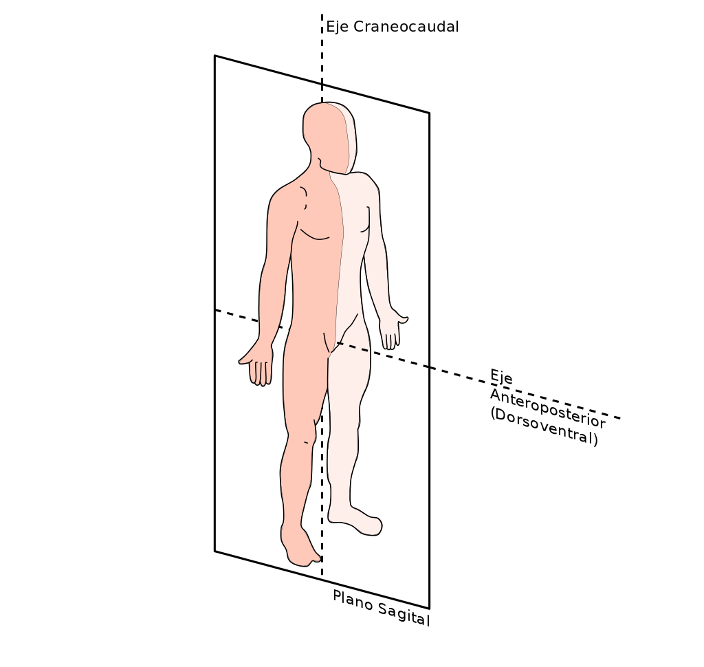
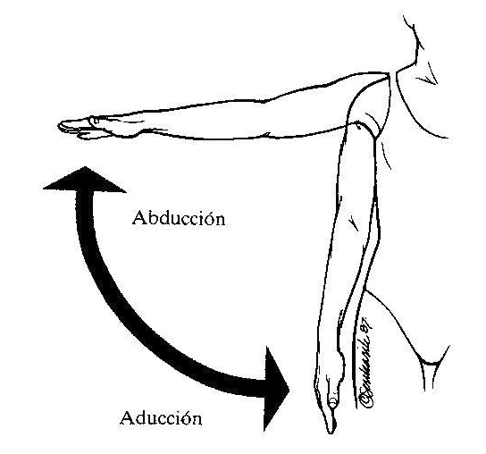
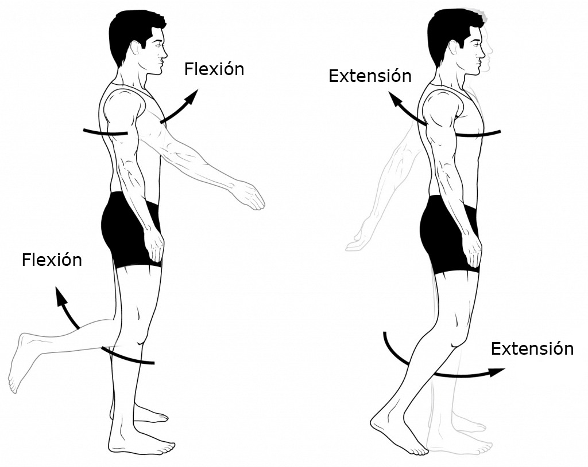
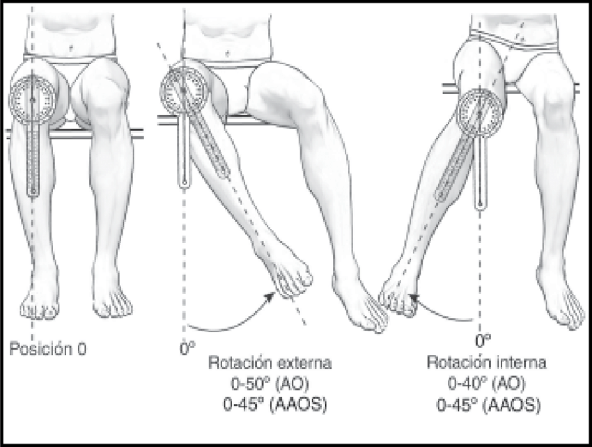

Nomenclatura Anatómica
Alfonso Médicis Benavides
Para describir las estructuras del cuerpo, los científicos y profesionales de la salud han establecido un lenguaje común que conduzca a tener significados precisos, donde permite una comunicación clara.
Para ello se tiene en cuenta:
Posición Anatómica
- De pie
- Los ojos mirando al frente
- Los miembros superiores al costado del cuerpo con las palmas de la manos hacia el frente
- Los pies dirigidos hacia adelante
- El cuerpo es vertical
Nombre de las regiones
- Cabeza
- Cráneo
- Cara
- Cuello
- Tronco
- Tórax
- Abdomen
- Pelvis
- Miembro superior
- Brazo
- Antebrazo
- Mano
- Miembro inferior
- Muslo
- pierna
- Pie
Términos direccionales
Los términos direccionales tienen sentido cuando se utilizan para describir la posición con respecto a otra, tienen que tener punto de referencia.
Se agrupan en pares con significados opuestos. Ejemplo:
superior: mas elevado del cuerpo, la Cabeza,
inferior la parte mas baja del cuerpo, los pies
Mas ejemplos de direcciones
| Término direccional | Definición | Ejemplo de uso |
|---|---|---|
| Superior (Cefálico o Craneal) | Hacia la cabeza o a la posición mas elevada de una estructura | El corazón es superior al estómago |
| Inferior (Caudal) | Alejado de la cabeza o hacia la parte más baja de una estructura | El bazo es inferior a los pulmones |
| Anterior (Ventral) | Cerca a la parte frontal del cuerpo | El esternón es anterior al corazón |
| Posterior (Dorsal) | Cerca a la parte trasera del cuerpo | El esófogo es posterior a la tráquea |
| Medial | Cercano a la línea media | El cúbito es medial al radio |
| Lateral | Alejado de la línea media | Los pulmones son laterales al corazón |
| Intermedio | Entre dos estructuras | El colon transverso es intermedio entre el colon ascendente y el colon descendente |
| Ipsilateral | Del mismo lado del cuerpo que otra estructura | la vesícula y el colon ascendente son ipsilaterales |
| Contralateral | Del lado opuesto del cuerpo que otra estructura | El colon ascendente y el colon descendente son contralaterales |
| Proximal | Cercano a la unión de un miembro con el tronco; cercano al origen de una estructura | El húmero es proximal al radio |
| Distal | Alejado de la unión de un miembro con el tronco; alejado del origen de una estructura | El húmero es proximal al radio |
| Superficial (externo) | En la superficie corporal o cercano a ella | Las constillas son superficiales a los pulmones |
| Profundo | Alejado de la superficie del cuerpo | Las costillas son profundas a la piel del pecho y de la espalda |
Planos anatómicos
Superfiecies planas imaginarias que atraviesan las partes del cuerpo
Plano Sagital
Es el plano que divide al cuerpo u órgano en lado derecho e izquierdo . Si pasa por la línea media divide al cuerpo en dos partes iguales y el plano se llama medio sagital o medio, pero si no lo hace, sino que lo hace en forma desigual, el plano se llama parasagital .
Planos anatómicos
Superfiecies planas imaginarias que atraviesan las partes del cuerpo
Plano Frontal o Coronal
Divide al cuerpo u órgano en parte anterior y posterior
Planos anatómicos
Superfiecies planas imaginarias que atraviesan las partes del cuerpo
Plano Transversal u Horizontal
Divide al cuerpo u órgano en parte superior y inferior
Planos anatómicos
Superfiecies planas imaginarias que atraviesan las partes del cuerpo

Relaciones de planos y ejes
Los planos sagital, frontal y tranversal tienen una disposición perpendicular entre si.
Cuando se estudia una región corporal a menudo se visualizan cortes a lo largo de los planos ( Corte Sagital, Corte Frontal, Corte Transversal)
Los Ejes permiten orientar el movimiento rotacional de las articulaciones
Eje Transversal esta sobre el plano frontal y perpendicular en el plano sagital
Eje Anteroposterior (sagital) esta sobre el plano sagital y perpendicular en el plano frontal
Cortes sagitales en regiones corporales
Cortes frontales en regiones corporales
Regresar a Planos AnatómicosCortes transversales en regiones corporales
 Regresar a Planos Anatómicos
Regresar a Planos Anatómicos
Eje Antero-posterior: Movimientos
 Regresar a Planos AnatómicosEje Transversal: Movimientos
 Regresar a Planos AnatómicosEje Longitudinal: Movimientos
 Regresar a Planos Anatómicos